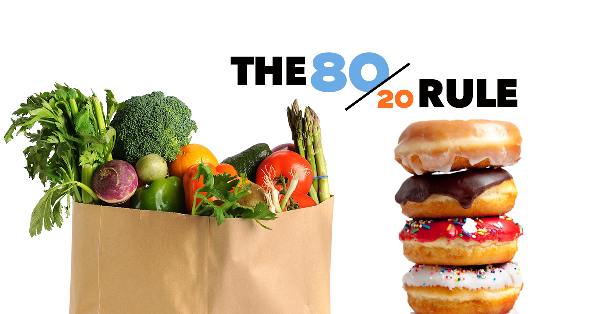

Many people want to start eating healthier and follow a more nutritious diet. When
you're diet contains a lot of overly processed foods, high-fat foods or foods high in sugar, you
increase your risk for a variety of chronic health conditions. On the other hand, a nutritious,
well-balanced diet can support your immune system, healthy development, and decrease your risk for
obesity, diabetes and high blood pressure. Make small changes to your diet over the course of a few
weeks as opposed to many drastic changes at once, and you'll be able to sustain a healthier way of
eating and enjoy the health benefits of a healthy diet.
Planning a healthy diet:

1-Set a goal for
yourself:
Starting a healthier diet is a
great overarching goal; however, to make your goal more realistic and doable, you'll need to be more
specific about what you want out of a"healthy diet"
- It might be helpful to first think about your currentdiet . What'sunhealthy
about it? Do you need to eat more green vegetables? Do you need to drink
more water? Should you snack less?
- Write up a list of the things you want to change, add or stop about your current diet.
Use these ideas to form multiple small goals to help you reach a healthier diet.
- The best way to reach any goal is to start with one or two very small changes. Trying
to overhaul your entire diet in a few days probably won't work well. Choose something
small to work on each week. You'll be much more successful long-term.
2-Start a food
journal:
After you've come up with a fewgoals
and how you can achieve them, consider starting a food journal. This will
serve as a method to track and evaluate your progress.
- Write all your goals in your food journal. You can review them as needed
or change them as you continue to make changes to your diet.
- Also track all of your foods and beverages in your food journal.
This will help you physically see what's missing from your diet or what you're eating
too much of. Make sure to write out each breakfast, lunch, dinner, snack (even a few
nibbles) and drinks you consume throughout the day. The more accurate you are, the better resource
this will be.
- Each week in your food journal, write down the change you want to work on. For
example, "This week, I will drink eight glasses of water each day." At the end of the week, go back
over your journal to see if you've completed this goal.
- There are many apps available to download on your smartphone that can help you track calories,
exercise, and even how much water you drink.
3-Create a meal
plan:
A meal planis
a great tool when you're trying to follow any new diet plan. These
plans are your guide and blueprint to your week of meals and snacks
- Meal plans can help you stay organized and on track throughout the week.You'll know
exactly what you're going to have and on what day. This way you can go to the grocery store
with a specific list, only buying what you plan to use in your
meals for the week. You can also plan ahead of time for busy days — for
instance, if you know you'll be very busy and work late on Thursday, make something on Wednesday
that you can easily reheat and have for leftovers on Thursday.
- Also write up the corresponding grocery list to your meal plans. This
will help you get in and out of the grocery store and ensure you have all the necessary
ingredients at home to make all of your meals.
- Don't skip meals. If you currently skip meals, make sure to schedule a meal or a
healthy snack for yourself at least every four hours. Skipping meals is more likely to lead to
binge eating later, which contributes to weight gain.
4-Meal prep in
your free time:
If you're busy and have little
time to make a meal from scratch, meal prep will be the key to following
your new healthier diet.
- Meal prep helps you get a lot of the work of cooking from scratch or
cooking at home out of the way during free time. When it's time for dinner
on a busy weeknight, you should have most or even all of the cooking already done.
- Plan a day or two during the week when you have some free time to do your meal
prep. Review your meal plan and grocery list and try to find ways to get
some cooking done.
- Meal prep is flexible. You can cook full dinners in advance so you just
have to reheat the night you want to eat it, or you can just do washing or chopping of
vegetables or marinating meat so you canquickly cook the night
of.
- Also consider purchasing foods that require less prep work to begin with. For example,
you can purchase pre-washed and cut bagged lettuce instead of a whole head of lettuce, frozen vegetables
that are heat and serve, or pre-grilled lean protein like grilled chicken strips.
- Meal prepping can be a time to catch up with people. Ask your partner or children to
help you prep while you talk about what has been going on in your lives.
Including nutritious foods:
1-Go for a
well-balanced diet
Although there are a variety of
eating styles and diet plans to follow, the most nutritious is a
well-balanced diet.
- A balanced diet will be different for everyone. You'll need to eat the right portion
sizes for your age, gender and activity level
- In addition, a well-balanced diet is one that features foods from each food group each
day. Although many diets suggest giving up gluten, or giving up carbs or even avoiding
dairy, all food groups offer beneficial nutrition to everyone. Only avoid
food groups if you have an allergy to those foods.
- Also make sure you have a wide variety of food in your diet. For example,
don't always choose to eat an apple as your afternoon snack. Alternate between apples,
bananas or berries to increase the variety of your diet
2-Choose lean
protein over higher fat protein sources

Protein is an essential nutrient
to any nutritious diet; however, choosing leaner protein sources is advisable.
- Protein is essential for a variety of functions in your body including: providing your
body with energy, supporting your lean muscle mass, providing the basis for many
enzymes and hormones and providing structure and support for cells.
- Lean protein sources are lower in fat and calories compared to higher fat
proteins.Many high-fat proteins (mostly from animal sources) are higher in saturated fat. Focusing
on leaner protein decreasing your overall intake of these types of fat
- To get your recommended amount of protein each day, include one or two servings at each meal.
One serving is about 3 – 4 oz or about the size of the palm of your hand
- Lean protein sources include: poultry, eggs, low-fat dairy, pork, seafood, beans and nuts and lower
fat beef.
3-Find ways to
include five to nine servings of fruits and vegetables each day:

Fruits and vegetables
are an integral part of a healthful diet. These are the foods that are
abundant in essential nutrients.
- Fruits and vegetables are both fairly low in calories, but high innutrients
(making them nutrient-dense foods). They are some of the best sources of fiber, vitamins, mineral
and antioxidants
- It's typically recommended to consume five to nine servings of fruits and vegetables
each day. So measure out 1 cup of vegetables, 2 cups of leafy greens and 1/2 cup of fruit to help
you meet this recommendation.
- If you don't typically eat a lot of fruits or vegetables now, increasing your intake to five to
nine servings daily can be difficult. Find easy ways to get in a few of these essential foods.
Try: mixing in sautéed vegetables into eggs for breakfast, sprinkle yogurt or cottage cheese with
fruit, add extra lettuce, tomatoes and onions to your sandwiches, or try adding some steamed
vegetables to your mac and cheese recipe.
4-Choose whole
grains over refined grains:
An easy way to increase your
nutrition and eat a healthier diet is by choosing 100% whole grains.
These foods are much better for you than refined grains.
- 100% whole grains have all three parts of the grain — the germ, bran and endosperm. They are less
processed and contain many more nutrients like fiber, protein and minerals.
- Refined grains are much more processed than whole grains. They are typically stripped of the bran
and germ so they are lower in fiber and protein. Avoid foods made with white flour — like white
pasta, white rice, pastries, chips and crackers.
- Include a few servings of whole grains each day. Measure out a 1 oz or 1/2 cup serving to help you
stick to appropriate portion sizes.
- Try whole grains like: quinoa, brown rice, whole wheat pasta, millet, farro or whole wheat bread
and wraps.
5-Choose healthy
sources of fat:
Although fat should be monitored
in your diet, there are a few types of fat that are particularly healthy and provide a
variety of health benefits.
- If you're trying to eat more sources of healthy fats, make sure to swap them out for unhealthy
fats. Do not add more fats — healthy or not — on top of a diet containing unhealthy fats.
- Omega 3 fats and monounsaturated fats are both great for your body. They have been shown to improve
cardiovascular health and improve cholesterol levels.
- The best sources of these healthy fats are: avocados, olive oil, olives, nuts, nut butters, canola
oil, chia seeds, flaxseeds and fatty fish (like salmon, tuna and mackerel). Remember, though, that
these may also have a high calorie count, so be moderate.
- Many health professionals recommended eating fatty fish at least twice a week and including a daily
source of other healthy fats.
6-Drink adequate
fluids:
Although water is not
necessarily its own food group or nutrient, it is an essential part of a healthy diet
and a healthy body.
- Drinking adequate water every day helps your body stay hydrated. It's very important to help
regulate body temperature, blood pressure and helps prevent constipation
- It's typically recommended to consume at least eight 8-oz glasses (2 liters) of water daily.
However, now many health professionals recommend consuming up to 13 glasses (3 liters) daily.
- In addition to water, you can try flavored water, decaf unsweetened coffee and tea. These beverages
are no calorie and caffeine free which are the best and most hydrating fluids.
Limiting unhealthy food:
1-Follow the
80/20 rule:

Although you want to follow a
healthier diet, it's still appropriate to indulge in your favorite foods. Following the
80/20 rule can help you stick to a healthy diet while eating more indulgent foods in moderation.
- Although eating a nutritious, well-balanced diet is important, it's not realistic to eat perfectly
healthy everyday for the rest of your life. People derive a lot of enjoyment out of eating and
occasionally eating more indulgent foods.
- Treat yourself to an indulgent dish, glass of alcohol or larger portions occasionally. This is
still considered normal and healthy eating; however, only indulge 20% of the time. Most of the
time, or 80% of the time, you should be choosing healthy foods.
2-Limit sources
of added and highly processed sugars:
.jpg)
There are certain groups of
foods that you should limit and only eat in moderation. Added sugars are something that should
definitely be eaten in moderation as they often no nutritional value.
- Added sugars are added to certain foods during their processing. They offer no nutrition, only
extra calories. In addition, many studies have shown that a diet high in added sugars can lead to
obesity.
- Added sugars are found in a wide variety of foods. Try to limit items like: breakfast pastries,
cookies, cakes, ice cream, candy, and cereals.
- Also limit sweetened beverages. Not only are they high in added sugars and calories, many people
don't think to count these types of drinks as a source of calories since they don't fill you up
like food does. You may end up drinking more calories through these beverages.
- The American Heart Association recommends that women consume no more than 6 teaspoons and men
consume no more than 9 teaspoons of added sugar daily.
3- Consume
limited amounts of alcohol:
If you choose to drink, do so in
moderation. Moderate amounts of alcohol generally do not pose health risks for most
people.
- If you drink larger amounts of alcohol (more than three servings daily), you may increase your risk
of: high blood pressure, liver disease, heart disease stroke and depression
- Unlike some foods, there is a specific definition of moderate alcohol consumption. Women shouldn't
drink more than one serving daily and men should consume no more than two daily.
- If you do drink, consider skipping mixed beverages that are mixed with sweetened beverages or fruit
juices as these contain extra calories and added sugars.
- One serving is equivalent to a 12-oz beer, 5 oz of wine, or 1.5 oz of liquor.
4-Limit sources
of unhealthy fats:
.jpg)
In addition to added sugars, you
should also limit certain groups of foods that contain high quantities of fat. In particular you want
to avoid higher levels of saturated and trans fat
- There has been some controversy over whether or not saturated fat is as dangerous or unhealthy as
previously thought. However, saturated fat is still a fat which means it's very calorie dense and
if eaten in large quantities can still lead to weight gain and adverse health effects.
- You don't need to avoid all saturated fats, but do eat them in moderation. Especially foods like:
full fat dairy, fatty cuts of beef or pork, deli meats and other processed meats.
- Trans fats have been directly linked to several adverse health effects like raising bad cholesterol
levels and lowering the good kind, increases your risk for developing heart disease and stroke and
increases your risk for developing diabetes.Try to avoid these foods as much as possible.
- Trans fats are found in a variety of foods including: pastries, cookies, cakes, margarines, pies,
fast foods, fried foods and baked goods.
- There is no safe upper limit for trans fats. These should be avoided if possible